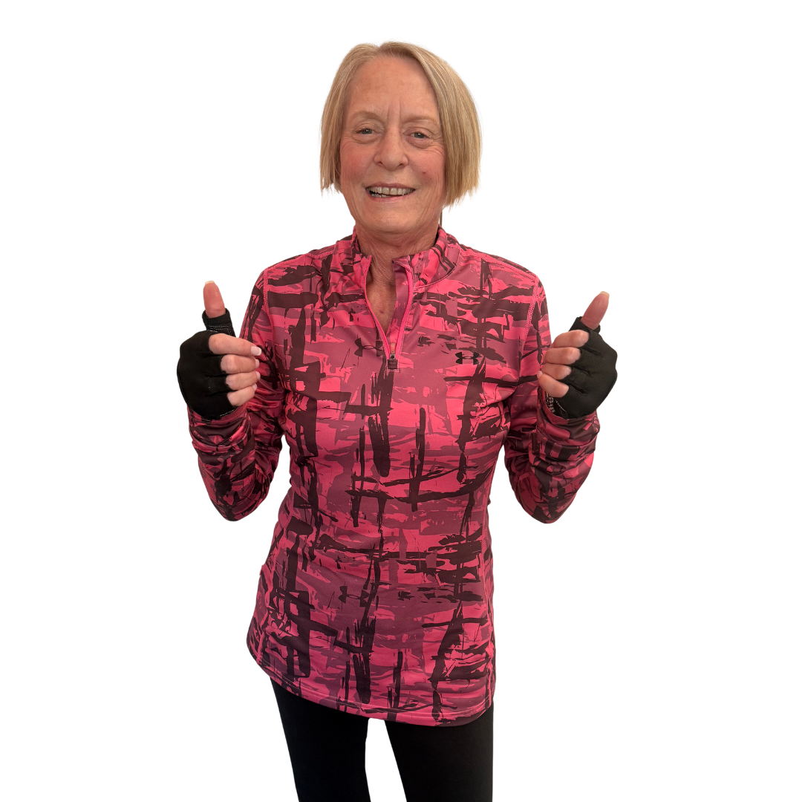
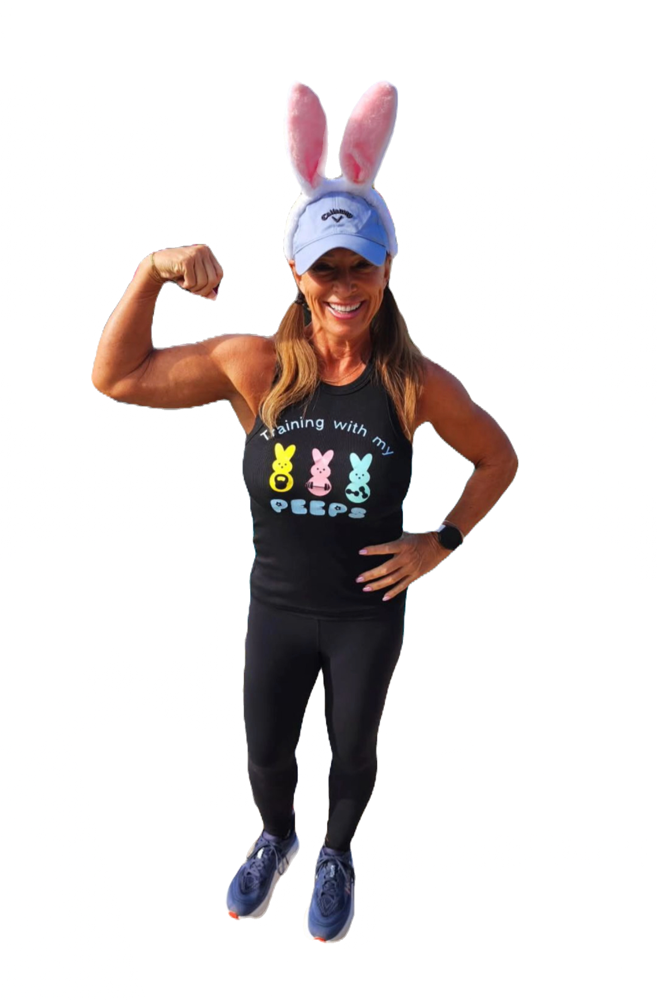
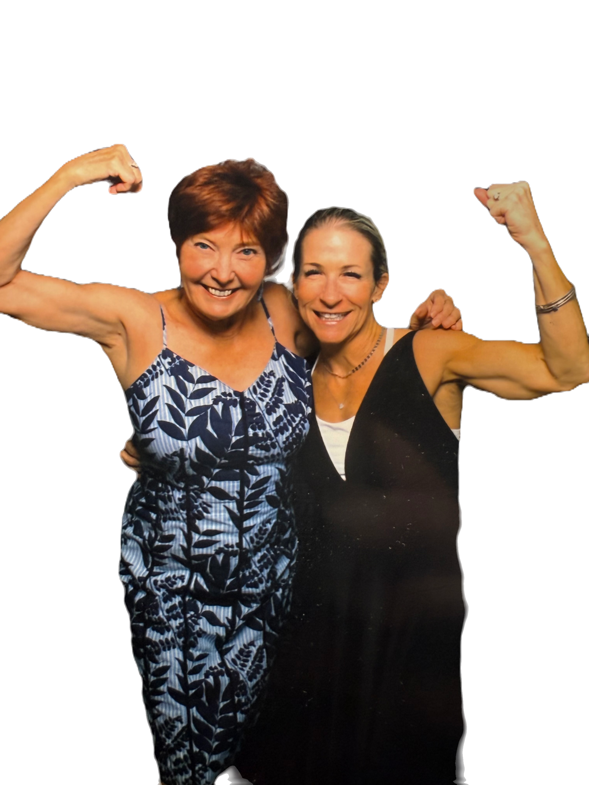

"Shannon is the bomb! She is upbeat, motivational, supportive and creative. You will not be bored! In particular, Shannon understands the real body challenges of real women. Got goals? Shannon will get you there, you will not be disappointed."
Happy Clients
THRIVE Testimonials

"Shannon has truly changed my life. I started working with her about a year ago after attending one of her women’s fitness presentations. I thought how much difference could a 30 minute session, twice a week make? I have lost 10 lbs, my strength and balance is better than ever for my age, and my spirit and self confidence has improved. Life is good. Thank you Shannon."

"After working with Shannon for the past few months, doing personal training & nutrition coaching, I can see and feel the difference in my body. I’m physically stronger, I’ve lost weight, & my skin even looks healthier. My blood pressure numbers & cholesterol have dropped, too. And on top of this, I feel so much better! I have more energy and more confidence in myself. Prioritizing my fitness has helped me THRIVE physically and be an overall happier woman. So grateful for Shannon’s coaching - she genuinely cares about me and helped me not just reach my goals, but surpass them."

"I started going to Shannon with a small group of friends last year. As soon as I saw results (which was pretty quickly) I added a solo day. It’s hard work, but so rewarding. My 70 year old body now has some really nice muscles… when I wave, my arms don’t jiggle anymore. I love wearing sleeveless tops!"
“I thought I was going crazy. At age 47, I started gaining weight, going up 2 pants sizes in less than a year. I tried doing more spinning classes, fasting, weight loss shakes — none of it worked. I felt hopeless. Then I started training with Shannon and she opened my eyes to a whole new way of thinking. She taught to exercise smarter, not longer. I actually spend less time at the gym now and have more time to spend with friends and family. Shannon also taught me how to eat so that I wasn’t starving all the time. It was a big jump for me to overcome many of the deeply implanted myths about exercise and dieting, but with Shannon’s leadership, I can fit into my jeans again and they’re even a little loose! I feel better than I did in my early 40’s!”